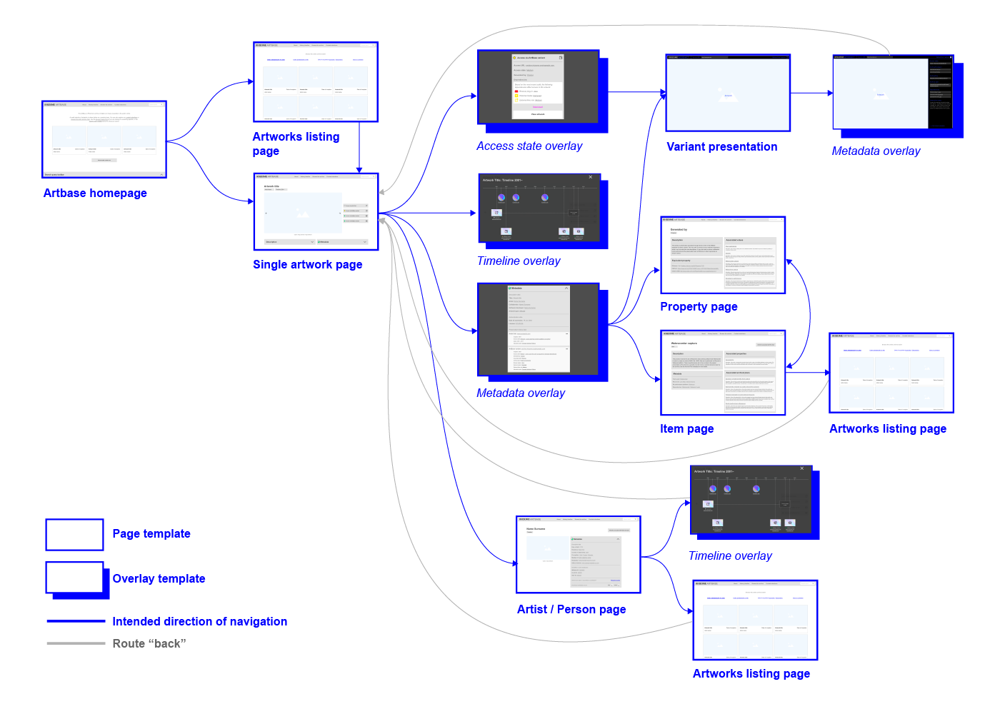
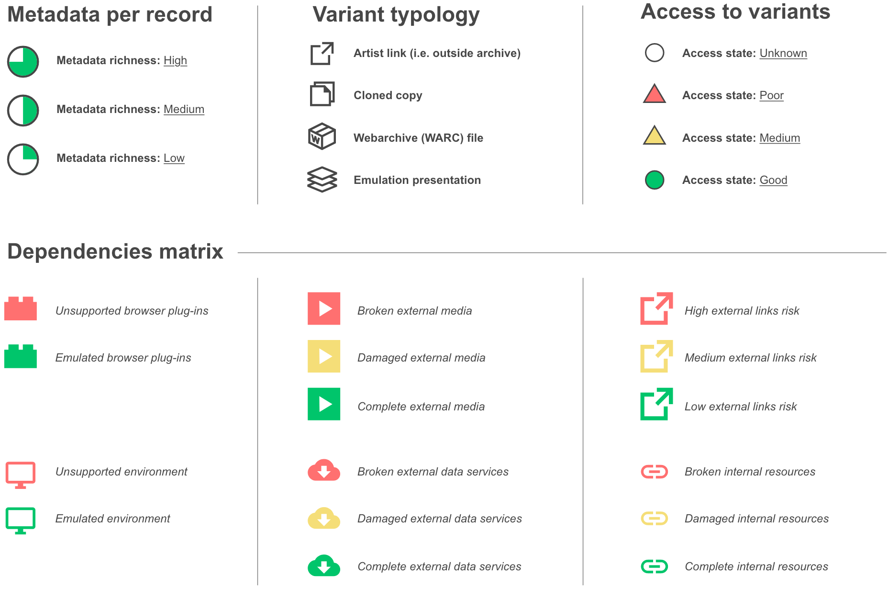
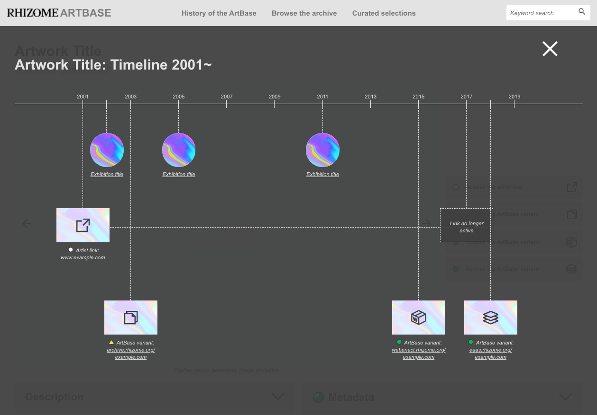

This phase of the design process explored net art’s capacity to change and evolve over time—as a result of technical dependencies and performance requirements, and/or intentional interventions by artists and archivists. Interactive prototypes were developed and iteratively refined through user workshops in order to address the implications of net art’s inherent variability for the design of the archive’s interface. The prototypes do not aim to be complete, fully-styled mockups. They are intentionally provisional (wire)frames for communicating new user interaction patterns that are made possible by the data model and linked data infrastructure (Wikibase).
➤ ➤

Prototype navigation map
This map sketches out the main paths a user can navigate through the current version of the ArtBase interface prototypes. As an interaction aid, the map helps manage user expectations by outlining the boundaries of the prototypes. As a design tool, the map also helps set out the priority areas within the development of the ArtBase interface. The prototypes do not capture every possible interaction with the elements listed on each page, so the map only includes areas that are explorable, and hence a priority for design and iterative refinement with users. The following sections of this page highlight just a few of the key interaction patterns prioritized in the design of the prototypes.
As already mentioned in the data model outline, the ArtBase is capable of linking to and contextualizing different instantiations of a net art work, referred to as ‘variants’. These variants are accessed through purposefully designed access points available on the primary artwork record page in the archive. The access point prototypes attempt to communicate details around two key areas. First, the type of variant the user accessing and its location: Is it under the care of the artist or the archive? Is it a web archive or an emulated instance of the work? And second, the condition of this variant: Is it completely inaccessible, partly damaged, or generally functional? Following evaluation sessions with Rhizome’s in-house staff and external users, the prototype designs were updated to include additional visual cues in the form of icons to differentiate between variants, as well as more detailed terminology explanations available upon hovering over or clicking on the buttons.

Archive interface iconography
Crucially, all of the metaphors used in the presentation of artworks and variants are conventional interface components. For example, buttons to access a new area of a web interface; icons to indicate difference in typology; color-coded icons to signal warnings; and pop-ups with additional text descriptions. The iconography was designed and developed over several user workshop sessions. The metadata richness icons draw upon existing precedents in institutional archival interfaces. The variant typology indicators help differentiate variants based on the mode of their generation or accession to the ArtBase. The access state and dependencies matrix indicators build on previous research conducted at Rhizome, which examined the condition of records in the ArtBase. The ‘traffic light’ system indicating access state uses a combination of colors and symbols to increase accessibility. The dependencies categories indicate high to low levels of risk or damage and are represented by conventional symbols and the established color-coding system.

Artwork record timeline
In the new ArtBase interface prototypes, timeline visualizations replace the static mode of ‘dating’ an artwork to a single point in time. Instead of the standard timelines deployed in many other institutional interfaces to provide an overview of a whole collection, timelines in the ArtBase are applied more granularly—at the level of the individual artwork record page. These visualizations acknowledge that a net art work is not a fixed entity, but rather a time-based, performative and processual assemblage of multiple components which often operate in parallel. Based on currently available data in the ArtBase, the timeline prototypes are prepared to map simple data points to begin with, for example, the date of inception of an artwork as manifested across all its variants—artist link, archival copy, etc. It is also possible to map exhibitions (or other significant events) which exist in the database and are associated with an artwork via one or more linked data properties.